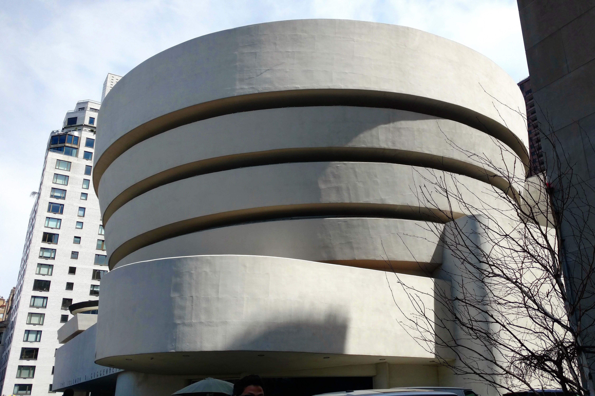
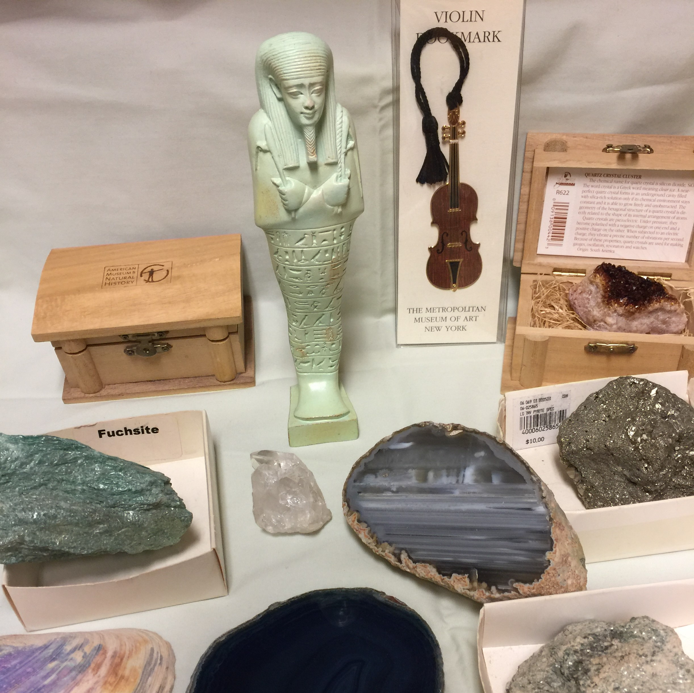

 "One of my favorite places in New York is the Guggenheim Museum, located on Fifth Avenue and 88th Street. The first time I was there was the end of 2016, I did a quick tour of the place, but it was not until the spring break of this year that I had a decent visit there. I love the place for its unique architecture, a spiral rotunda designed by my favorite architect, Frank Wright. In the mean time, there is a nice collection of both abstract and realistic paintings and sculptures." - Cammy Wan
Start your own collection from New York Museums
 When I'm not work on my computer, going to any New York Museum, is still a favorite of mine from childhood. Whether it's The American Museum of Natural History,Museum of Modern Art, or Brooklyn Museum of Art These are all great places to go, especially when it is cold outside or on rainy days. You will always find me at the Rocks, Gems, and Mineral section of the Museum. At the end of every visit, I always purchase a mineral rock from the Museum's Gift Shop. Here's a few of the many rocks I've collected
Quote of the Week
"We must welcome the future, remembering that soon it will be the past; and we must respect the past, remembering that it was once all that was humanly possible." - George Santayana
Angelina Jolie and Brad Pitt (Wax Figure)Revisit some old favorite spots, like Madame Tussauds New York, Wax Museum located on 42nd Street near Times Square. There are five floors of wax figures. This is a great place to walk through with friends and take pictures with wax celebrities. See the new figures that were added.
My New York
"I love the place for its unique architecture, a spiral rotunda designed by my favorite architect, Frank Wright. In the mean time, there is a nice collection of both abstract and realistic paintings and sculptures. People should visit Guggenheim, as it is one of many good museums located here, but also it is not too big and overwhelming compared to the Met, or too crowded compared to MoMA. Its unique collection is also definitely worth a visit! Wear comfortable shoes and if you are a student, you can get a student discount." - Cammy Wan (fig.1)